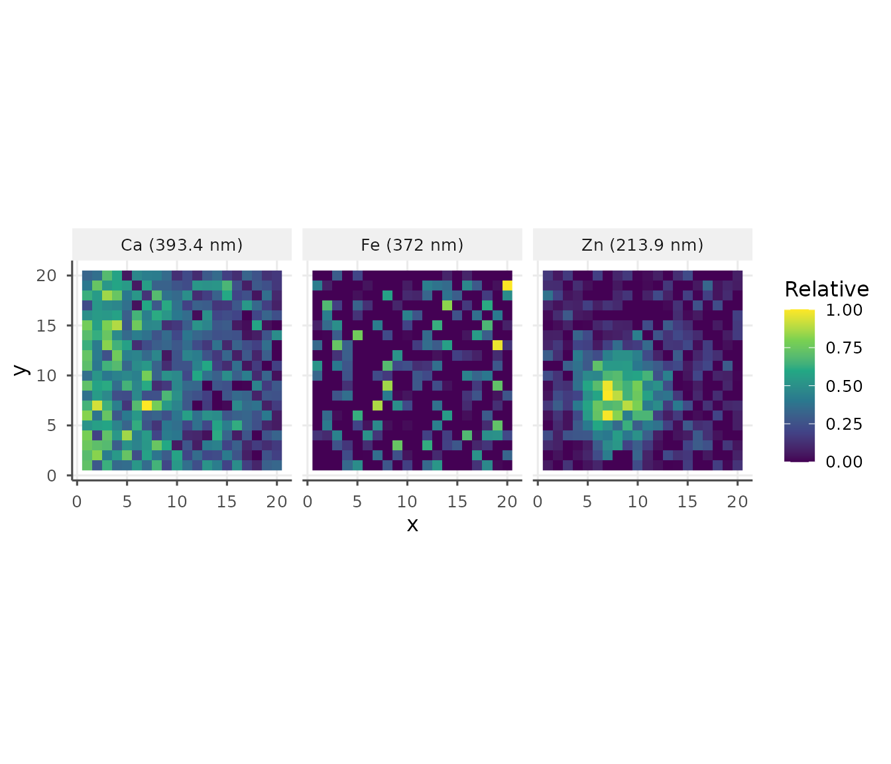
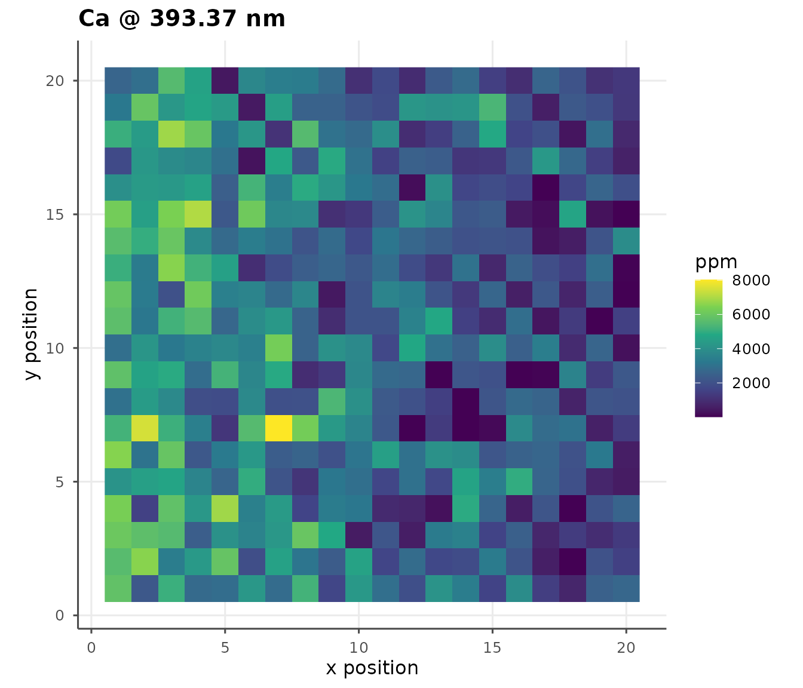

Raster scan dataset
ds <- ls_example_data("spatial")
dsThe simulated tissue section has:
- A left-to-right Ca gradient (decreasing)
- A top-to-bottom Fe gradient (increasing)
- A Zn-enriched hotspot simulating a tumor region
Multi-element panel
maps <- ls_map_elements(ds, c("Ca", "Fe", "Zn"),
c(Ca = 393.37, Fe = 371.99, Zn = 213.86))
ls_plot_map_panel(maps)
Applying a calibration to the map
cal_ds <- ls_example_data("calibration")
cal <- ls_calibrate(cal_ds, "Ca", 393.37,
concentrations = cal_ds$sample_info$concentration,
verbose = FALSE)
m_cal <- ls_build_map(ds, "Ca", 393.37, calibration = cal)
ls_plot_map(m_cal)
Hotspot detection
zn <- ls_build_map(ds, "Zn", 213.86)
hot_idx <- which(zn$values > stats::quantile(zn$values, 0.9))
head(data.frame(x = zn$x[hot_idx],
y = zn$y[hot_idx],
zn = round(zn$values[hot_idx], 1)))
#> x y zn
#> 1 8 3 9.5
#> 2 8 4 9.9
#> 3 10 4 9.1
#> 4 6 5 10.7
#> 5 9 5 11.3
#> 6 5 6 9.8